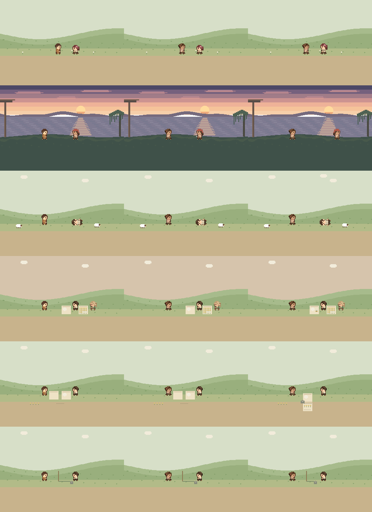
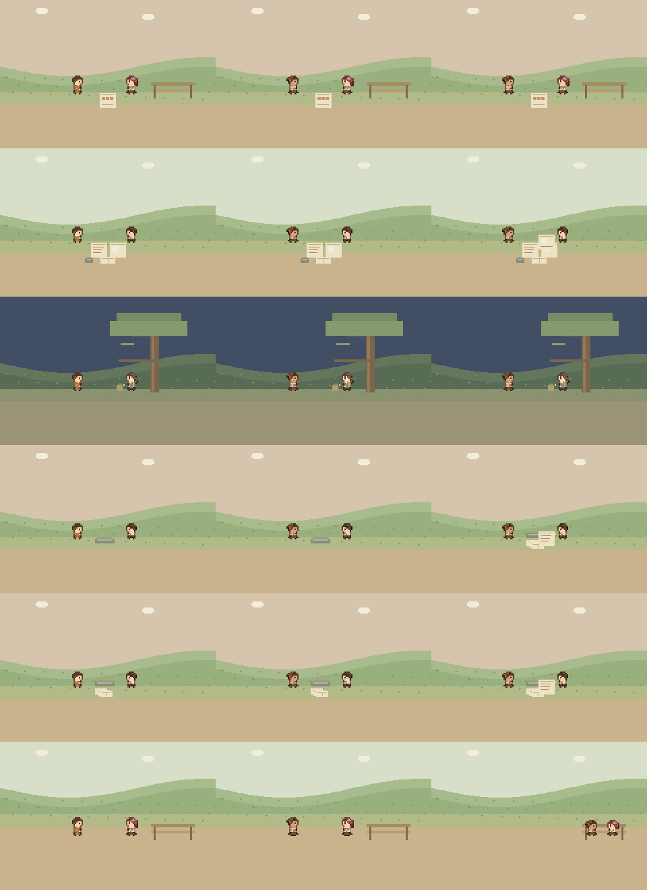
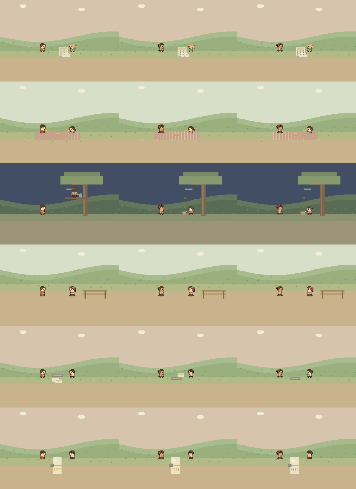
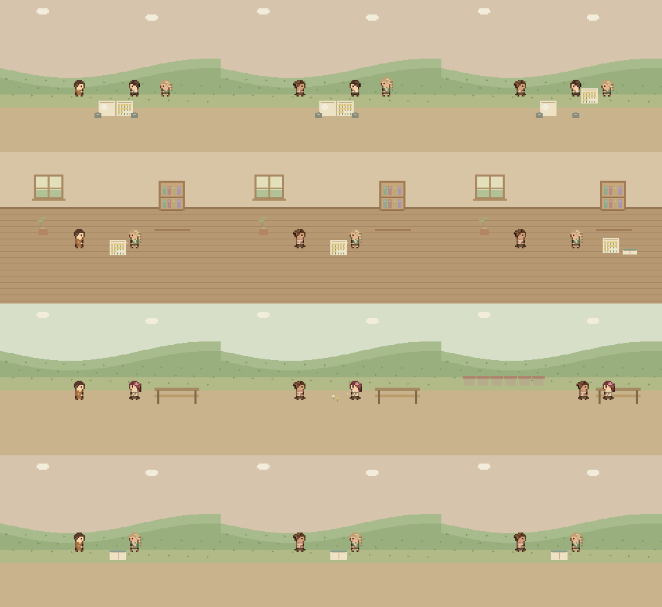
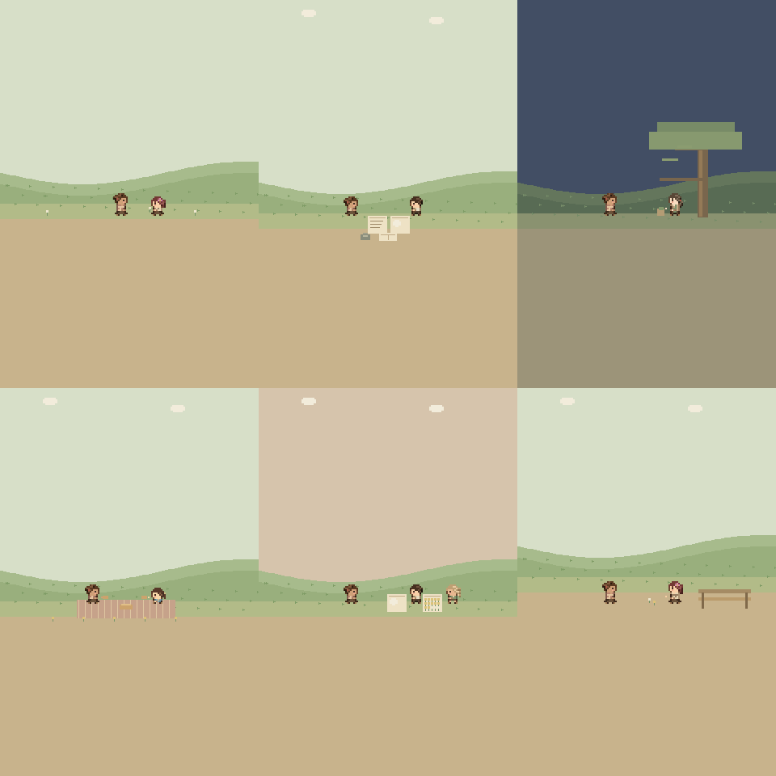
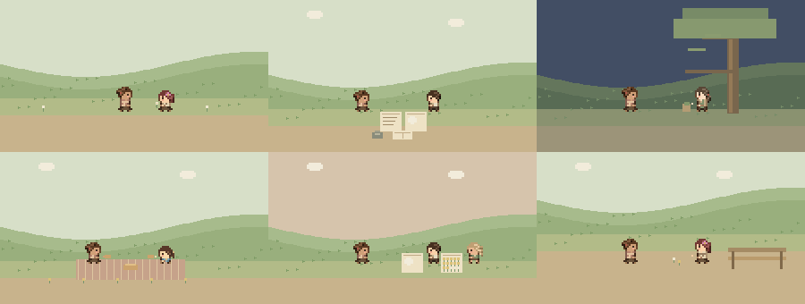

언덕 이벤트 배경
사용자 요청으로 이벤트 배경은 맵 언덕을 수정하기 전의 기존 배경으로 복구했습니다. 실제 맵의 돌턱과 꽃은 유지합니다.
hill-background-scenes-1.png

hill-background-scenes-2.png

hill-background-scenes-3.png

hill-background-scenes-4.png

hill-background-mobile.png

hill-background-thumbnails.png
